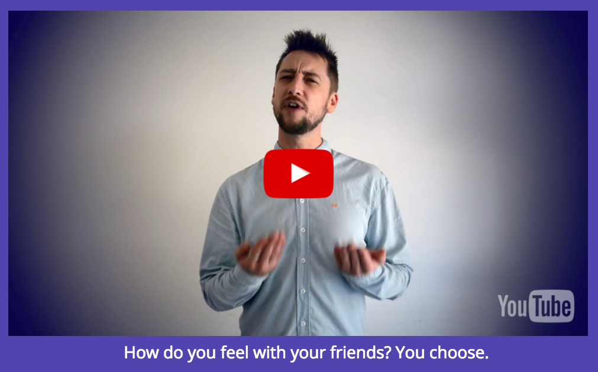
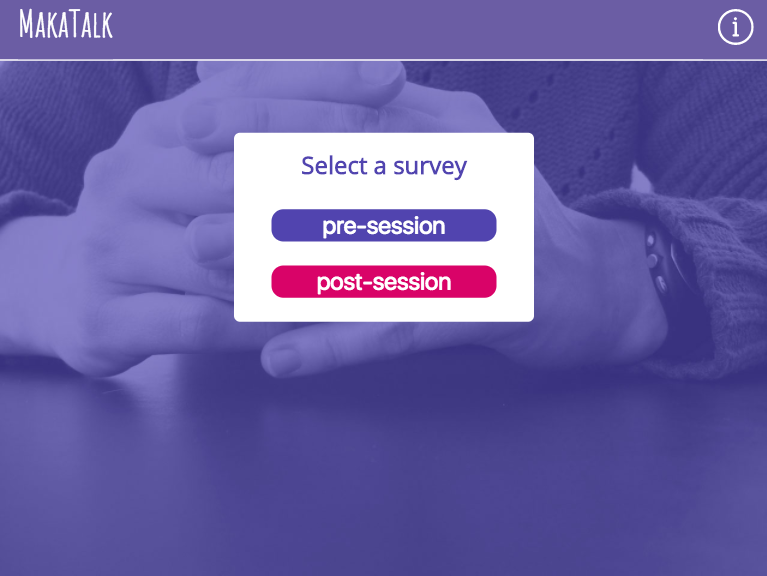
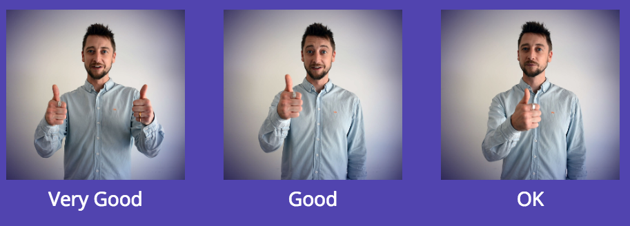

Overcoming Communication Barriers With Makaton Sign Language.
MakaTalk is an iPad web app developed to help young people with learning difficulties to express how they are feeling.
Our product owners are two clinicians who currently use paper forms to assess the emotional wellbeing of their patients before and after a therapy session.The problem is, for many of their young patients, a paper form is just too abstract, causing a communication barrier. In fact, often the parent or guardian will fill in the form on the young person's behalf, leading to inaccurate data.
We wanted to transform these paper forms into a tactile, audiovisual experience that the young person could be immersed in. So we created two interactive surveys, using videos of Makaton sign language.
It was an interesting challenge to figure out how the user would select their answer. Our solution is to autoplay a Youtube playlist when the page loads, highlighting the options (image thumbnails) as each is enacted in Makaton. The available options/answers are at the bottom of the screen, so that the main video isn't covered up while they tap away on the tablet. In further iterations, we would like to add a progress bar and back/forward arrows.
A/B testing in a therapy setting has shown that the young people prefer responding to a video interface over a paper form. So the clinicians can get a better idea of how they are feeling. That said, they would like to see "more exciting animations... like rockets". Good idea, we think!
I used: pencil and paper, HTML5, CSS, JavaScript.